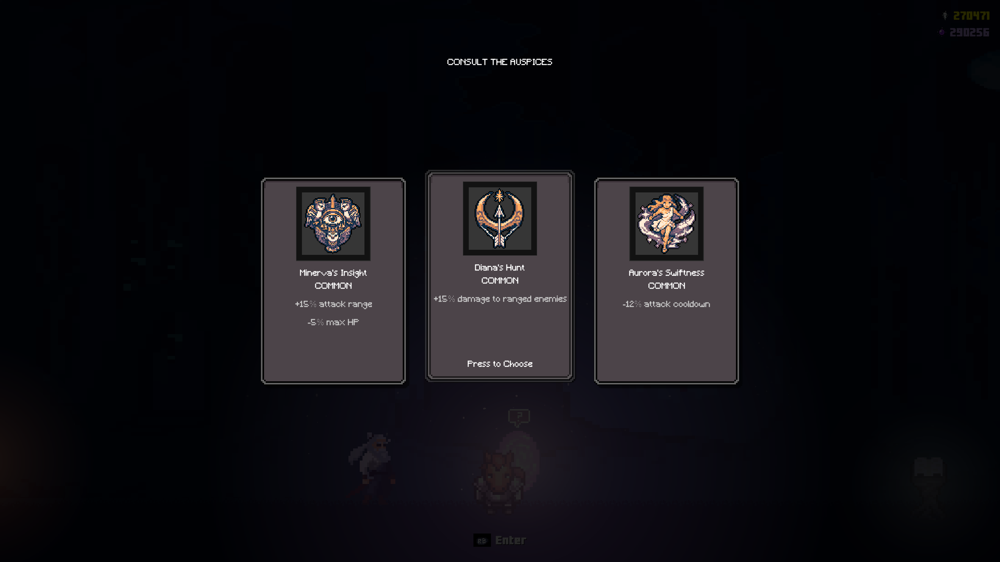

About the game
UnderVeil is a 2D pixel-art Roguelike indie game that takes place in a world where all hope is lost. The player must navigate through a series of procedurally generated dungeons, battling enemies and getting stronger, all while uncovering the story of a maddened King about to wake up from his long slumber. The game features over 30 unique weapons, 50+ blessings to aid the player, and a variety of enemies and bosses to defeat.
Gameplay Loop
You begin your journey weak and vulnerable, but every run gives you a chance to grow stronger. As you progress, you unlock new weapons and earn the help of different gods from multiple mythologies, allowing you to shape your own build and face increasingly dangerous challenges.

Main Features
- Fluid melee combat with various move sets
- Exploration-driven progression across connected areas
- Near endless build variety due to massive pool of Blessings, Skills and other features
- A Hub area where you can permanently upgrade your hero and uncover more of the story
- Multiple mythologies, each with a unique role in how they aid the player
How the game came to exist
As someone who has loved games ever since I was a kid, creating one of my own has always been a dream of mine.
UnderVeil is that dream finally coming to life.
What started as a school project has grown into a full-fledged game, complete with its own story, world, and characters.
The game is still in development, but I'm excited to continue expanding it and bring it into fruiton.
I hope to release a demo on Steam in the near future and share the game with players around the world.
Tools used


Fun Facts
- Every asset used in UnderVeil is either freely available through the tools above or an original creation made by me. (You can tell which were made by me)
- The game is inspired by one of my friends, who is also the inspiration for its main character.
- UnderVeil started as a school project, but as I became more invested in it, I decided to turn it into a full game intended for release.